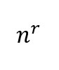

This project was made as a final task for developer basic skills course.
This project was made using HTML, CSS and JavaScript.
Made by Jaakko Lankila and Tran Nham.
2017
INPUT:
FROM
TO
Result:
Incorrect input
DEC
BIN
OCT
HEX
This tool is used to compute the number of ways to select
ritems out ofnitems.
How many Objects will you choose?
(r)
How many different Objects are there?
(n)
Does the order of the selected items matter?
Can an item be selected more than once?
Result:
Type:
Permutations (n > r)
Formula:

Incorrect input
This button generates a Truth table from PandQ and PorQ
This tool is used to compute the random distribution of an array of numbers
from A to B, out of N random tests.
A:B:N:
Random tests:
Blaise Pascalwas an interesting dude. He studied physics, philosophy, religion, and mathematics
—with maybe just a little help from alien polynomials from a certain planet.
He found a numerical pattern, called Pascal's Triangle, for quickly expanding a binomial.
Example: